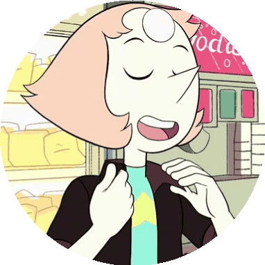

A imagem da Rose começa a questionar os sentimentos da Pérola. Diz que se ela a amasse tanto, por que não a teria defendendido? Nesse momento a imagem começa a se aproximar em posição de ataque prometendo fazer com que nossa heroína tivesse o mesmo destino que no passado sua líder teria tido, então a Pérola:

A-Ataca a imagem
B-Congela e não consegue se mexer
C-Pede perdão pelos seus erros se defendendo do ataque